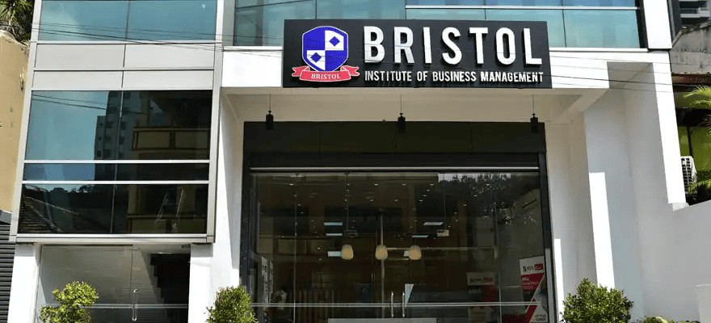

Foundation in Business Management
A foundation route covering English, mathematics, academic writing, essentials in business, marketing, and business economics.
- Awarding body
- DLC Sri Lanka
- Duration
- 8 months
Foundation and higher diploma partner
DLC Sri Lanka pathways support foundation and higher diploma progression across business, finance, psychology, teaching, IT, AI, and data science.

Partner story
The Distance Learning Centre Limited is described on the original Bristol site as a fully state-owned institute functioning under Sri Lanka's public administration sector.
DLC was established in 2002 as a World Bank project with counterpart funding from the Government of Sri Lanka, and has served public and private sector personnel for more than 21 years.
Through Bristol Institute, DLC pathways give students structured foundation and higher diploma routes before degree progression or career entry.
Programmes offered
These are the current DLC Sri Lanka foundation and higher diploma routes represented in the prototype.
A foundation route covering English, mathematics, academic writing, essentials in business, marketing, and business economics.
An accounting and finance foundation introducing financial accounting, management accounting, mathematics, academic writing, and business fundamentals.
A foundation route for students preparing to progress into psychology, counselling, or applied psychology pathways.
A foundation route for students preparing to progress into teaching, early childhood education, or primary teaching pathways.
A foundation route for students preparing to progress into information technology, management IT, or AI and data science pathways.
A higher diploma covering advanced business knowledge in marketing, economics, business law, operations, research, and people management.
A higher diploma covering accounting, finance, statistics, taxation, corporate governance, and financial management.
A higher diploma combining management knowledge with information technology, digital systems, and applied business technology.
A higher diploma introducing counselling practice, applied psychology, human development, communication, and research foundations.
A higher diploma covering AI, programming, machine learning, data processing, cloud computing, NLP, big data, IoT, and a capstone project.
A higher diploma focused on child development, early learning environments, teaching practice, and education foundations.
A higher diploma route for students preparing for primary teaching, classroom practice, learning design, and child-centered education.
Admissions support